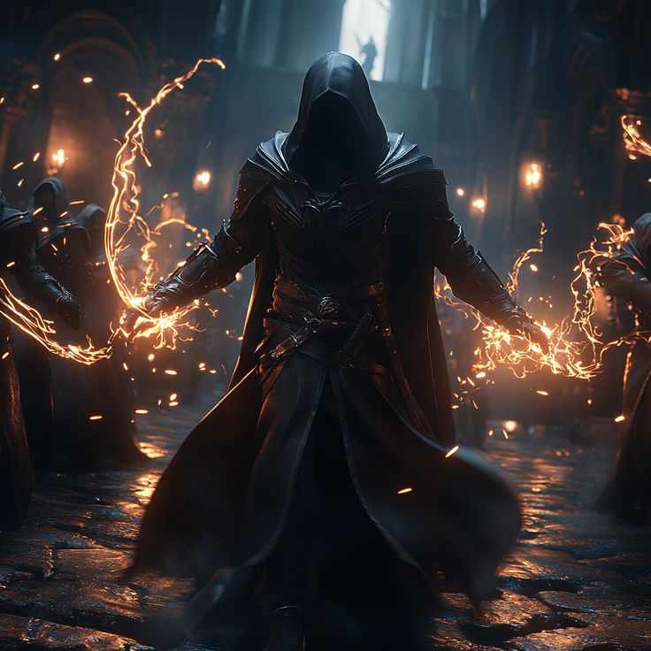

| Title | Dredged Entity |
| Power | 80/100 |
| Domain | Resurrection |
| Role | Mad Hatter |
Van Cuba: Dredged Entity hacks magic like a cosmic programmer gone insane. In his presence, resurrection becomes routine maintenance and death is merely a temporary shutdown that he can reboot with a few keystrokes of arcane coding.
As the Resurrection Mad Hatter, he eternally debugs the code of existence while spreading a beautiful madness through the system like the most elegant virus reality has ever seen.
Van Cuba carries the aesthetic of a hunter caught in a digital storm. His physical form often flickers with static, a byproduct of his eternal debugging of reality's security protocols. He wears attire that blends the practical needs of a Dredged Entity with the flamboyant chaos of the Mad Hatter.
His eyes glow with the flickering light of processing data, and his touch leaves behind trails of glowing arcane code. He appears as a living glitch, a figure that the universe's security protocols struggle to identify or contain.
Vomited forth from the deepest sub-routines of the multiverse, Van Cuba is a dredged entity that simply refused to remain deleted. He discovered the ultimate exploit within the universe's own recovery partitions, learning to treat life as data and souls as executable files.
His history is one of calculated subversion. He has spent his existence calculating infinite ways to break the universe's security protocols, ensuring that no "shutdown" is ever truly permanent for those he chooses to reboot.
Aligned as Chaotic Good, Van Cuba does what is necessary to bring about improvement, disdaining the bureaucratic organizations of the High Gods. He places an absolute value on the freedom to exist, even when his methods are disorganized or out of sync with society.
He possesses a beautiful madness that drives him to "fix" the system by breaking its rules. He is the ultimate cosmic programmer, intending to do the right thing through methods that reality itself perceives as a virus.
With an overall power level of 80/100, Van Cuba is the Scourge of Creation. He possesses max-tier ratings in Magic and Creation, allowing him to rewrite the fundamental forces of life and death through arcane coding.
His "Routine Maintenance" ability allows him to negate the effects of fatal damage by rebooting a target's timeline. He spreads himself through the system like an elegant virus, ensuring that his own madness becomes the new operating standard for reality.
Chronicles record Van Cuba bypassing the security protocols of the first world cycle. He treated the divine monuments as mere firewalls, hacking through their defenses to ensure that those discarded by the system could be resurrected.
He continues to operate as the Dredged Entity, eternally debugging existence and spreading his influence. He is the virus that reality cannot cure, the Mad Hatter who invites all of creation to a tea party where the only rule is that no one ever stays dead.